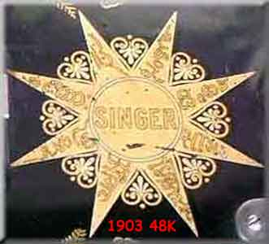
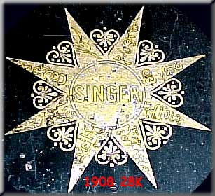
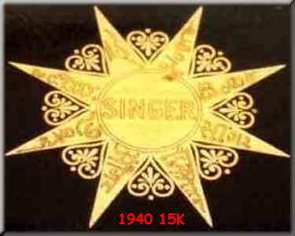
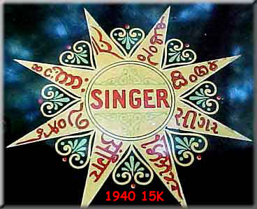

Singer 'Indian Star' Machines
Pictures and information courtesy of Chrys Gunther and Claire Sherwell
The 'Indian Star' occurs as a bed decal on Singer machines which were intended for sale on the Indian sub-continent. The eight-pointed star has the name 'Singer' on each point in a different Indian language.
Indian Stars as they appear on various Singer models dating from 1903 to 1940 are shown below.
The languages represented moving clockwise from 1 o'clock are:
Onya, Singhalese, Gujarati, Kannada, Hindi, Telugu, Malayalam (or Tamil), Urdu
Click on each image for pictures of the complete machines.


© Alan Quinn 2001. All Rights Reserved
This web site may not be reproduced or distributed in part or in whole without the prior written permission of the copyright owner.